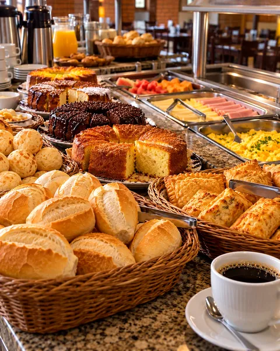
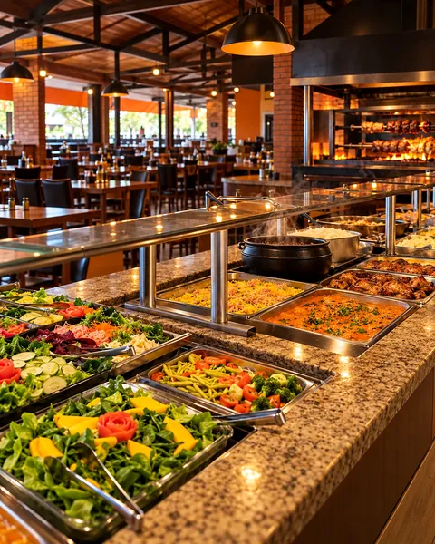
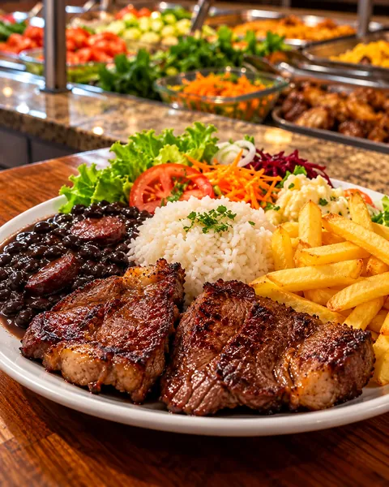
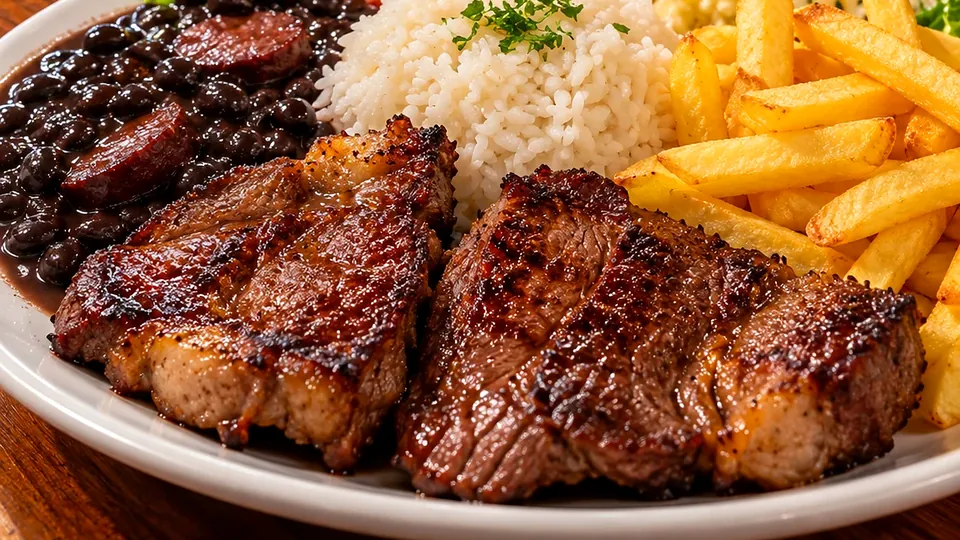
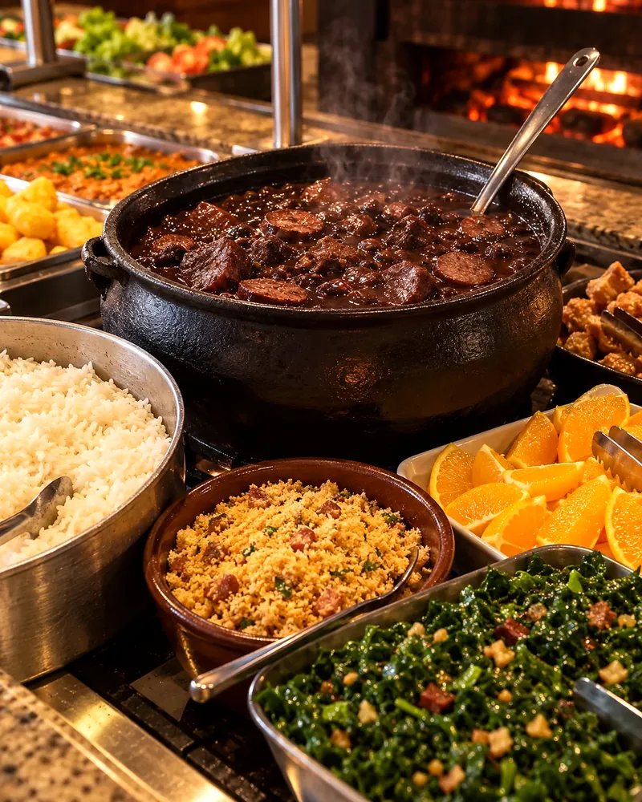

A partir das 06h

Café da manhã
Para começar bem o dia ou seguir viagem.

Parada do Mano · Cascavel/PR
Buffet variado, comida caseira e churrasco para quem gosta de comer bem.
O restaurante
Café, almoço e janta de segunda a domingo, na beira da BR-277: buffet completo, comida caseira, fogão a lenha e churrasco.
Abre às 06h fecha às 23h30
A partir das 06h

Para começar bem o dia ou seguir viagem.
Almoço

Buffet completo, com variedade todos os dias.
Até 23h30

Comida caseira também à noite.
Cardápio
Escolha uma categoria. O que vai à mesa muda ao longo da semana — o WhatsApp diz na hora o que está servindo hoje.
O buffet
Comida caseira e variedade todos os dias: pratos quentes, arroz, feijão e uma mesa inteira de saladas. Cada um monta o prato do seu jeito.
Perguntar o buffet de hojeBuffet livre ou por quilo e os valores do dia: confirme pelo WhatsApp antes de vir.

Churrasco e fogão a lenha
Carne no espeto, na churrasqueira, e panela no fogão a lenha. Como a casa diz: bom churrasco, bons momentos.

Aos domingos
Rodízio com variedade de carnes passando na mesa, direto da churrasqueira.
Valor do rodízio sob consulta
Consultar o rodízio
Dia especial
Quarta e sábado têm feijoada no Parada do Mano. Pergunte pelo WhatsApp o que acompanha e os valores do dia.
Consultar a feijoadaGaleria
O buffet, o prato cheio, as saladas, a feijoada e o café da manhã. Toque para ampliar.
Contato e localização